由於想嘗試寫份遊戲企劃
但因為沒有企劃經驗
所以找了市面上的遊戲來進行拆解分析
原本希望拆解魔物獵人來當作練習
但因為魔物獵人架構龐大
所以找了最近在玩的 APP SkyForce 來當作練習
也希望能有人告訴我缺少了什麼
Sky Force遊戲拆解
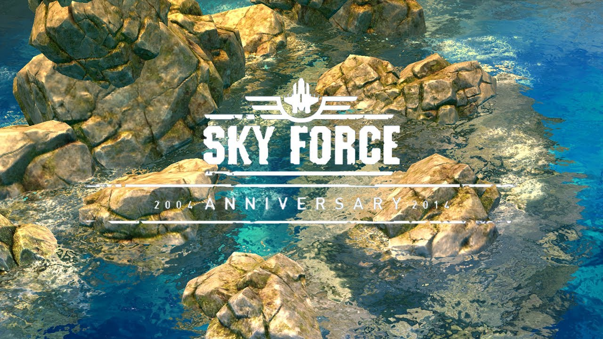
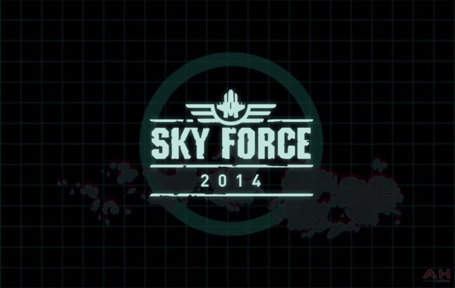
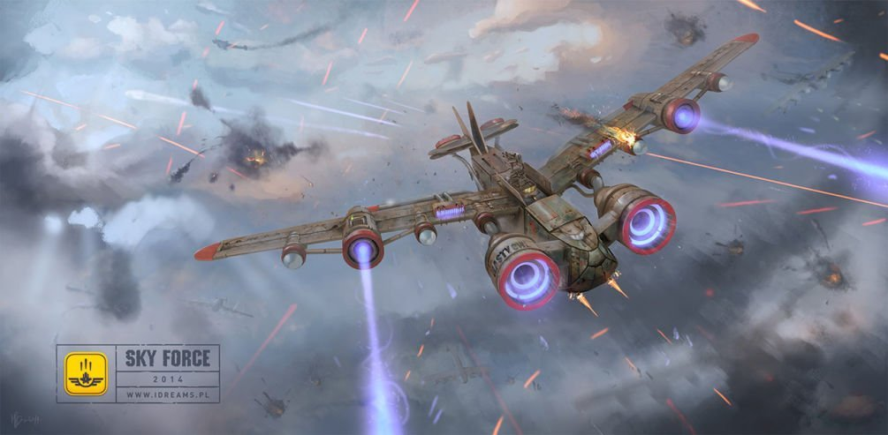
遊戲名稱：Sky Force
遊戲平台：Android 4.1以上、iOS 7.0以上
遊戲類型：經典射擊
遊戲介紹：經典射擊遊戲，透過不斷的強化機體來挑戰更高難度的關卡，閃躲子彈並伺機攻擊
遊戲特色：
關卡成就：每個關卡都有關卡成就，成就解鎖後可挑戰更高難度關卡( 消滅70%敵人，消滅100%敵人，未受傷，解救全部人民)
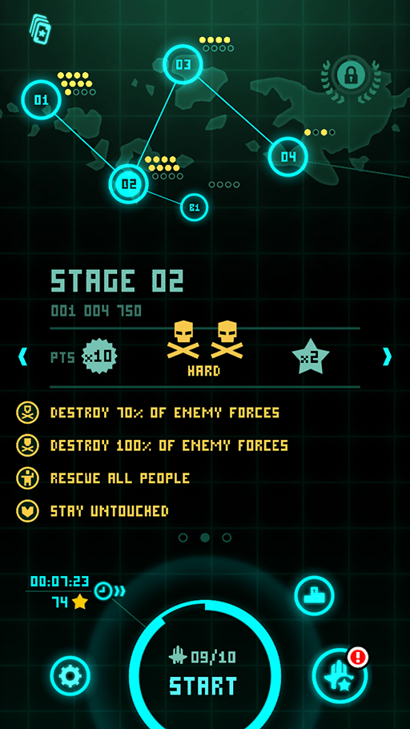
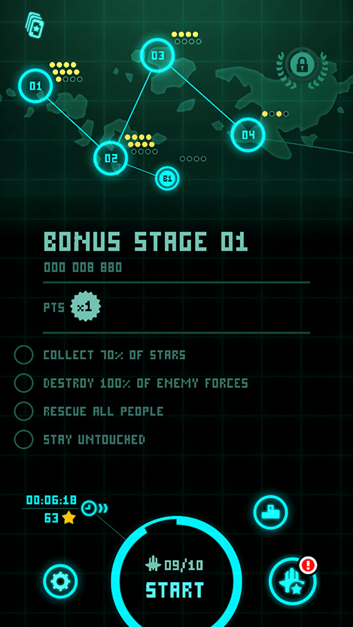
強化機體：透過強化機體挑戰更強的敵人
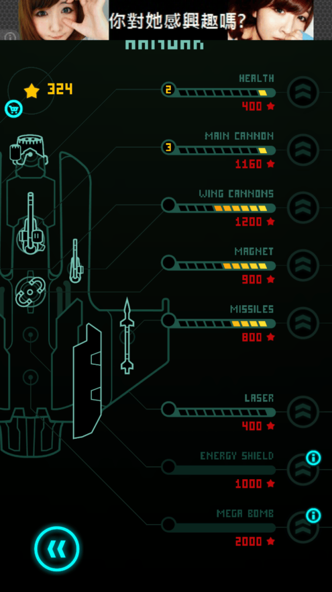
特殊功能：直線光炮、防禦光盾、全屏炸彈
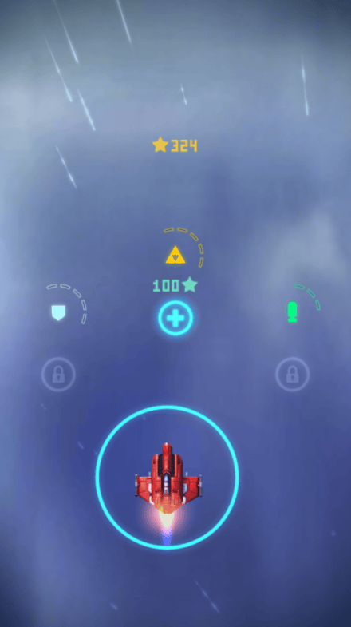
操作系統：點選螢幕移動飛機 ( Type 1：絕對位置、Type 2：相對位置 )
進行遊戲時，若未觸碰螢幕，切換至Slow Motion模式，方便玩家選擇暫停或特殊功能
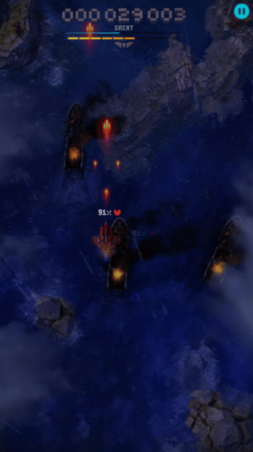
美術風格：寫實擬真
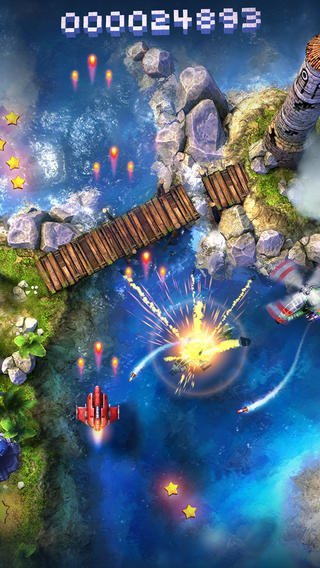
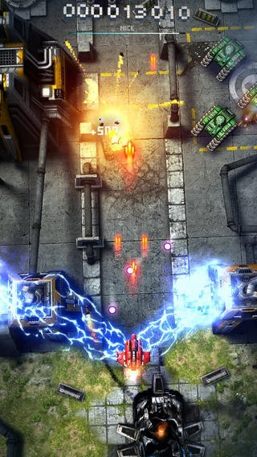
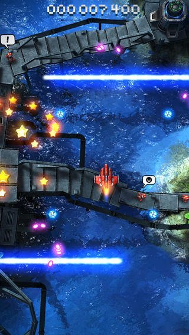
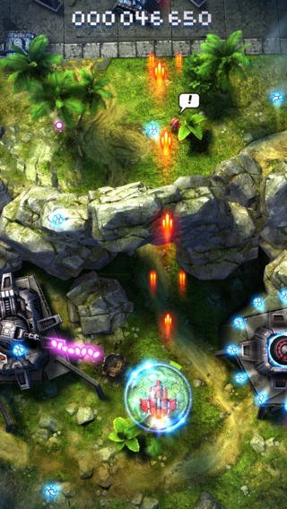
遊戲內購買
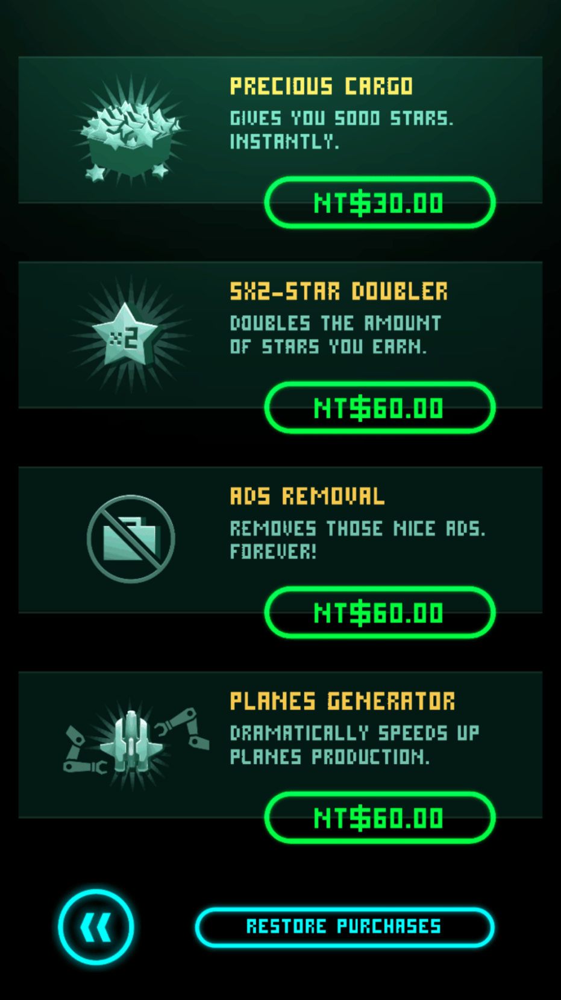
消耗性道具：少量星星
永久性道具：廣告遮擋、星星數X2、強化加速
玩家購買動機分析
星星數：遊玩過程中，玩家會漸漸發現星星數是用來強化機體的消耗品，也是玩這個遊戲最需要的消耗性道具，沒有強化的機體要進行後面的關卡十分困難，加上在教學關卡中，玩家已經體會到機體強化後所帶來的效果，所以對於強化機體的好處會有很深刻的印象，由於主砲強化至等級3-1需要5850個星星，而前面關卡中所獲得的平均星星數約為150 ( 依難度而定 )，以此來計算平均需要玩40次左右可獲得6000星星數，遊戲花費時間約為40 * 5 = 200 分鐘，所以玩家只需要付出 0.99 US 即可以省下200分鐘的時間來刷星星數。
而強化機體時，也需要等待時間，主砲強化至等級3-1需要5個小時的等待時間，玩家也可透過利用星星數來減少強化等待時間。
廣告遮擋：典型的永久性消費道具，玩家只需要付出少量的代價，即可以換取完整的遊戲介面顯示
星星數兩倍：目標玩家為不希望用購買來取代遊玩重心但又希望能提升星星獲取數的玩家，使玩家自己判斷是否直接購買星星數，或是購買星星數取得兩倍
強化加速：與星星數兩倍同樣的設定，玩家只須購買一次即可以獲得永久性的功能，較適合理智型玩家購買
廣告出現時機
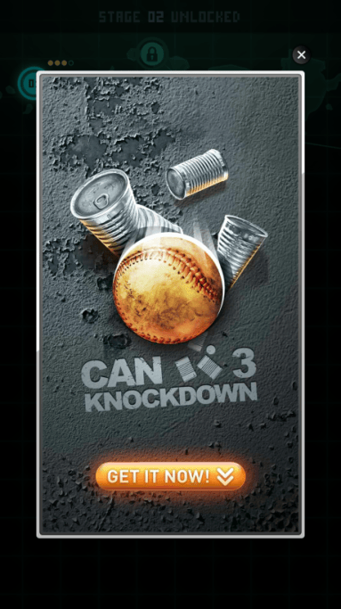
廣告放置分析
橫幅廣告：強化頁面是玩家最容易停留思考的地方，思考要先進行什麼部位的強化，適合拿來放置橫幅廣告，且放置位置不影響強化流程。
翻頁式廣告：遊戲場景回大地圖時，玩家最容易誤觸螢幕
例如：
收集到一定星星數，想要快速強化
關卡失敗，想要快點在玩一次
關卡成功，繼續刷星星
遊戲流程
開頭動畫( 第一次進入遊戲 )
↓
教學關卡( Boss不被摧毀 )
↓
Loading
↓
大地圖( 第一次進入只可選擇開始關卡 )
↓
開始關卡
↓
Loading
↓
關卡進行
↓
成功、失敗、退出
↓
Loading
↓
大地圖
遊戲流程分析
遊戲開頭動畫：
呈現出遊戲對於美術下了一番苦心，顯現出對於海水模擬、雲朵模擬、各種模型、畫面呈現以及教學Boss模型的用心程度。
遊戲教學：
第一次進入遊戲時直接進入遊戲教學關卡，利用提示來使玩家了解如何操控機體，且教學內容中特意使玩家操控有一定強化程度的機體( 主砲強化至等級3、副砲強化至等級2、磁鐵吸引強化至一定強度、機體生命強化至一定程度 )，使玩家產生這機體很強，打起來很有爽快感的第一印象
在獲得遊戲中的各種道具時，皆會直接以音效來提示道具的功能
讓玩家在遊玩的過程中就了解各種道具的功能
例如：Weapon Upgrade、Human Rescue、Cratical Condition、Game Over
但因為是遊戲教學所以無法對教學中最後的BOSS飛機產生出任何傷害，玩家機體被破壞後，第一次將玩家導入關卡選擇頁面
第一次關卡選擇頁面：
第一次進入時，限制了介面的顯示，只顯示開始按鈕，使玩家自然而然的只能選擇開始遊戲按鈕，使玩家被動的接受按鈕配置
關卡1：
由於在遊戲教學中玩家的機體遭到摧毀，給予玩家這是一台新機體的提示，第一次進入關卡的玩家會發現到火力與教學關卡有相當大的差距，但因為有這是新機體的提示，所以玩家會不得已接受這是新機體所以火力差
第二次關卡選擇頁面：
限制了介面的顯示，只顯示強化按鈕，由於強化按鈕並沒有任何提示字元，所以透過這種方式半強迫玩家選取，一旦玩家有過一次實際點選，就能清楚的知道按鈕的功用
強化頁面：
第一次進入，提示玩家這個頁面的功用，利用簡單的步驟流程使得玩家能夠明白這個頁面的功用
In here you can spend some stars and buy various upgrades to make your aircraft stronger.
在這裡你可以花費一些星星並且購買不同種類的升級項目來使你的飛機火力更加強大
系統設定
出場調整
等待時間：60分鐘
消耗星星：600
基本素質
生命值、主武器傷害、副武器傷害、磁鐵引力、導彈傷害、雷射傷害
防禦盾持續時間、全屏炸彈傷害
武器強化需求表
|
種類 |
等級 |
等待時間(s) |
升級花費 |
|
生命 |
1-10 |
15 * level |
30 * level |
|
11-20 |
150 + 75 * ( level – 10 ) |
300 + 50 * ( level – 10 ) |
|
|
21-30 |
900 + 60 * ( level – 20 ) |
800 + 100 * ( level – 20 ) |
|
|
主武器 |
1-10 |
30 * level |
20 * level |
|
11-20 |
300 + 270 * ( level – 10) |
200 + 50 * ( level – 10) |
|
|
21-30 |
3000+ 300 * ( level – 20 ) |
700 + 230 * ( level – 20 ) |
|
|
副武器 |
解鎖 |
600 |
2000 |
|
1-10 |
300 + 60 * level |
500 + 100 * level |
|
|
11-20 |
900 + 210 * ( level – 10 ) |
1500 + 150 * ( level – 10 ) |
|
|
21-30 |
3000 + 300 * ( level – 20 ) |
3000 + 200 * ( level – 20 ) |
|
|
磁鐵 |
解鎖 |
600 |
1000 |
|
1-10 |
300 + 60 * level |
300 + 100 * level |
|
|
11-20 |
900 + 60 * ( level – 10 ) |
1300 + 100 * ( level – 10 ) |
|
|
21-30 |
1500 |
2300 + 100 * ( level – 20 ) |
|
|
導彈 |
解鎖 |
600 |
1000 |
|
1-10 |
600 + 100 * level |
300 + 100 * level |
|
|
11-20 |
1600 + 140 * ( level – 10 ) |
1300 + 100 * ( level – 10 ) |
|
|
21-30 |
3000 + 300 * ( level – 20 ) |
2300 + 100 * ( level – 20 ) |
|
|
雷射 |
解鎖 |
1200 |
1500 |
|
1-10 |
300 + 60 * level |
300 + 100 * level |
|
|
11-20 |
900 + 60 * ( level – 10 ) |
1300 + 100 * ( level – 10 ) |
|
|
21-30 |
1500 + 150 * ( level – 20 ) |
2300 + 100 * ( level – 20 ) |
|
|
防禦盾 |
解鎖 |
600 |
1000 |
|
1-10 |
300 + 60 * level |
300 + 100 * level |
|
|
11-20 |
900 + 60 * ( level – 10 ) |
1300 + 100 * ( level – 10 ) |
|
|
21-30 |
1500 + 150 * ( level – 20 ) |
2300 + 100 * ( level – 20 ) |
|
|
全屏炸彈 |
解鎖 |
1200 |
2000 |
|
1-10 |
300 + 60 * level |
300 + 100 * level |
|
|
11-20 |
900 + 60 * ( level – 10 ) |
1300 + 100 * ( level – 10 ) |
|
|
21-30 |
1500 + 150 * ( level – 20 ) |
2300 + 100 * ( level – 20 ) |
特殊功能
|
種類 |
花費(星星) |
|
雷射 |
100,200,300,400,500 |
|
防禦盾 |
100,150,200,300,500 |
|
全屏炸彈 |
500,1000,1500 |
遊戲內購買
|
種類 |
花費( US ) |
|
5000星星 |
0.99 |
|
星星兩倍 |
1.99 |
|
廣告阻擋 |
1.99 |
|
強化加速 |
1.99 |
敵方資料
敵方設定
|
種類 |
生命值 |
攻擊方式 |
攻擊頻率 |
移動方式 |
|
普通飛機(綠) |
直線、曲線 |
|||
|
普通飛機(黃) |
迴旋 |
|||
|
普通飛機(紅) |
雙迴旋 |
|||
|
直升機 |
追蹤導彈 |
橫向移動 |
||
|
中型飛機(綠) |
子彈 |
緩慢 |
||
|
航空母艦 |
連發子彈 |
緩慢 |
子彈設定
|
種類 |
傷害 |
速度 |
|
普通子彈(紫) |
慢 |
|
|
砲彈(藍) |
快 |
|
|
追蹤導彈 |
快 |
|
|
連發子彈(藍) |
普通 |
音樂音效需求
音樂-大地圖背景音樂
音樂-場景音樂
音樂-進入Boss戰
音效-點選關卡
音效-按鈕
音效-購買IAP按鈕
音效-Misson Start
音效-充值特殊功能
音效-子彈發射
音效-爆炸
音效-獲取星星
音效-獲取星星X5
音效-Weapon Upgrade
音效-特殊道具出現
音效-Nice
音效-Good
音效-Great
音效-導彈發射
音效-等待解救時間
音效-解救人民
音效-獲取雷射充值
音效-獲取防禦盾充值
音效-獲取全屏炸彈充值
音效-暫停
音效-通關
音效-星星結算
音效-成就達成
美術需求
2D介面需求
ICON
大地圖
按鈕-開始
按鈕-設定
按鈕-排行
按鈕-強化
可解鎖功能提示
圖示-已解鎖關卡
圖示-未解鎖關卡
圖示-特殊關卡
成就未開啟
成就開啟 – 70%敵人
成就開啟 – 100%敵人
成就開啟 – 拯救所有人民
成就開啟 – 無受傷
地圖
棋盤式雷達
掃描路徑
開始按鈕提示特效
圖示-等待時間
圖示-星星
設定
按鈕-切換語言
圖示-操作模式1
圖示-操作模式2
按鈕-操作模式切換
圖示-音樂全開
圖示-音樂全關
圖示-音效全開
圖示-音效全關
滑桿
按鈕-返回
按鈕-開發人員
按鈕-幫助
開發人員
按鈕-返回
圖示-Logo
各語言版本開發名單
背景
幫助
背景
光暈特效
按鈕-返回
強化
總星星數
按鈕-商城
按鈕-升級
按鈕-返回
構造圖-機體底圖
構造圖-生命
構造圖-主砲
構造圖-副武器
構造圖-磁鐵
構造圖-導彈
構造圖-雷射
構造圖-防禦盾
構造圖-全屏炸彈
解鎖提示
按鈕-確認解鎖
按鈕-取消解鎖
商城
圖示-5000星星
圖示-星星數兩倍
圖示-廣告遮擋
圖示-強化加速
按鈕-購買
按鈕-返回
遊戲場景
圖示-防禦盾
圖示-雷射光
圖示-全屏炸彈
圖示-總星星數
按鈕-充值特殊功能
特效-充值特效
特殊功能持有數
按鈕-開始
圖示-玩家生命
分數
圖示-評分條
圖示-射擊速度等級
按鈕-暫停
暫停介面
資訊-目前關卡
資訊-目前關卡難度
資訊-關卡成就
圖示-操作模式1
圖示-操作模式2
按鈕-操作模式切換
圖示-音樂全開
圖示-音樂全關
圖示-音效全開
圖示-音效全關
滑桿
按鈕-返回遊戲
按鈕-回大地圖
按鈕-回大地圖確認
按鈕-回大地圖取消
武器
2D-子彈(紅)
2D-子彈(紫)
2D-子彈(藍)
2D-雙發子彈(紅)
2D-三發子彈(紅)
特效-子彈追尾(紅)
特效-子彈(紫)光暈
特效-子彈(藍)光暈
特效-全屏炸彈
特效-導彈追尾
特效-爆炸
特效-直升機導彈追尾
特效-電流
特效-雷射
特效-防禦盾
2D-人民解救時間
3D模型需求
幫助
3D-星星
3D-星星X5
3D-射擊速度
3D-生命
3D-人民
3D-雷射
3D-防禦盾
3D-全屏炸彈
遊戲場景
3D-遊戲場景
3D-超級大飛機
3D-玩家飛機
3D-追蹤導彈
3D-輕型飛機(綠)
3D-輕型飛機(紅)
3D-小戰艦
3D-防禦塔
3D-直升機(綠)
3D-直升機導彈
3D-小箱子
3D-中型飛機(綠)
3D-航空母艦
動畫需求
20秒開頭動畫
程式需求
介面控制
Settings
Click_Settings：Change the scene to Settings scene
Click_SettingsBack：Change the scene to LevelSelect scene
Click_Localization：Change the language in the game
Click_Controls：Change the control type in the game
Slider_Music：Callback and record the music volume
Slider_Effect：Callback and record the effect volume
Credits
Click_Credits：Change the scene to Credits scene
Click_CreditsBack：Change the scene to Settings scene
Help
Click_Help：Change the scene to Help scene
Click_HelpBack：Change the scene to Settings scene
Hangar
Click_Hangar：Change the scene to Hangar scene
Click_HangarBack：Change the scene toLevelSelect scene
Click_Upgrade：Upgrading or unlock of the item which the user selected
HighScores
Click_ HighScores：Change the scene to HighScores scene
Click_ HighScoresBack：Change the scene to LevelSelect scene
LevelSelect
Click_Stage：Displaystage information or unlock condition
Click_Start：Change the scene to Game scene
Game
Click_Recharge：Recharge the laser, energy shield or mega bomb
Click_GameStart：Start the game
Click_Pause：Display the pause panel and pause the game entirely
Click_Controls
Slider_Music
Slider_Effect
Click_Resume：Close the pause panel and make the type of game slow motion type
Click_Menu：Display the game exit panel and close the original panel
Click_MenuBack：Display the original panel and close the game exit panel
Click_GameExit：Change the scene to LevelSelect scene
Click_Laser：Instantiatethe Laser prefab or SetActive it
Click_EnergyShield：Instantiate the EnergyShield prefab or SetActive it
Click_MegaBomb：Instantiate the MegaBomb prefab or SetActive it
Click_Collect：Add the star and display the Summary panel
Click_SummaryCheck：Close the Summary panel and display the HighScores panel
機體控制
PlayerController
發射控制
FireController
子彈
BulletObejctPool
BulletRecovery
BulletPath
傷害控制
SetDamage：賦予傷害
GetDamage：獲取傷害
音效控制
MusicManager
敵機管理
EnemyController
敵機移動路徑
EnemyPathFollowing
敵機武器控制器
WeaponController